Related News Below...
Click on any thumbnail below to explore articles, podcasts, videos, and interviews about the ongoing War in The Middle East.
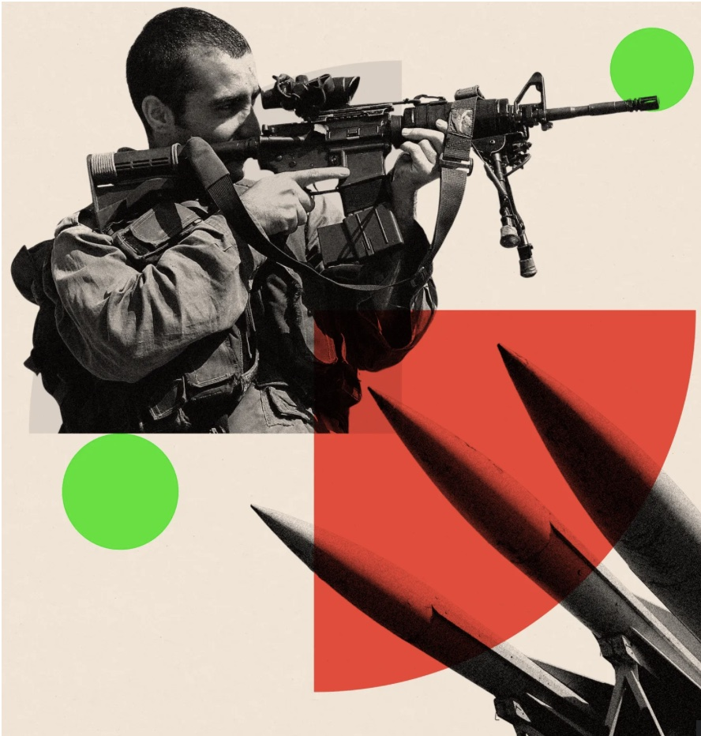 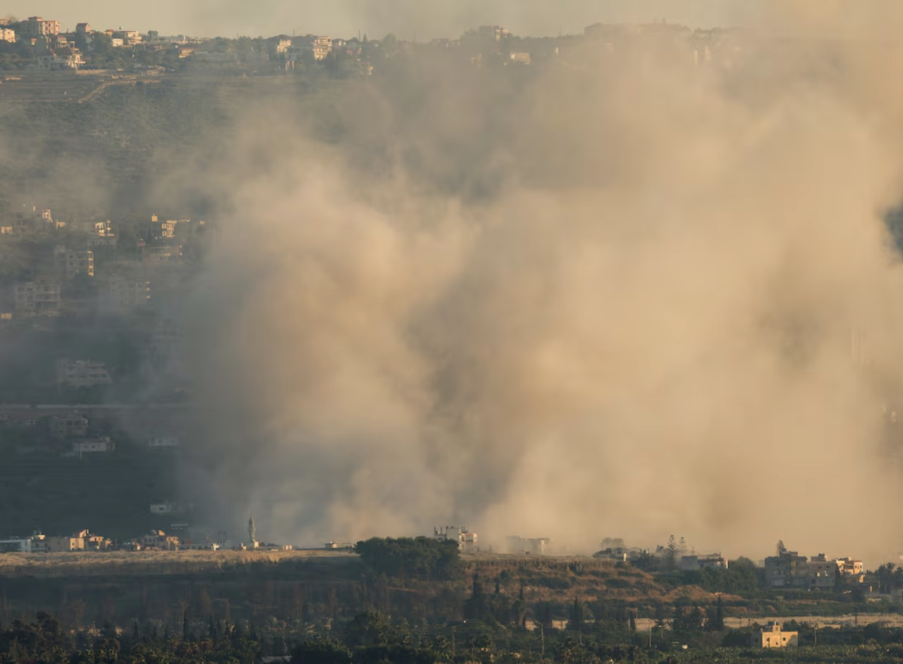 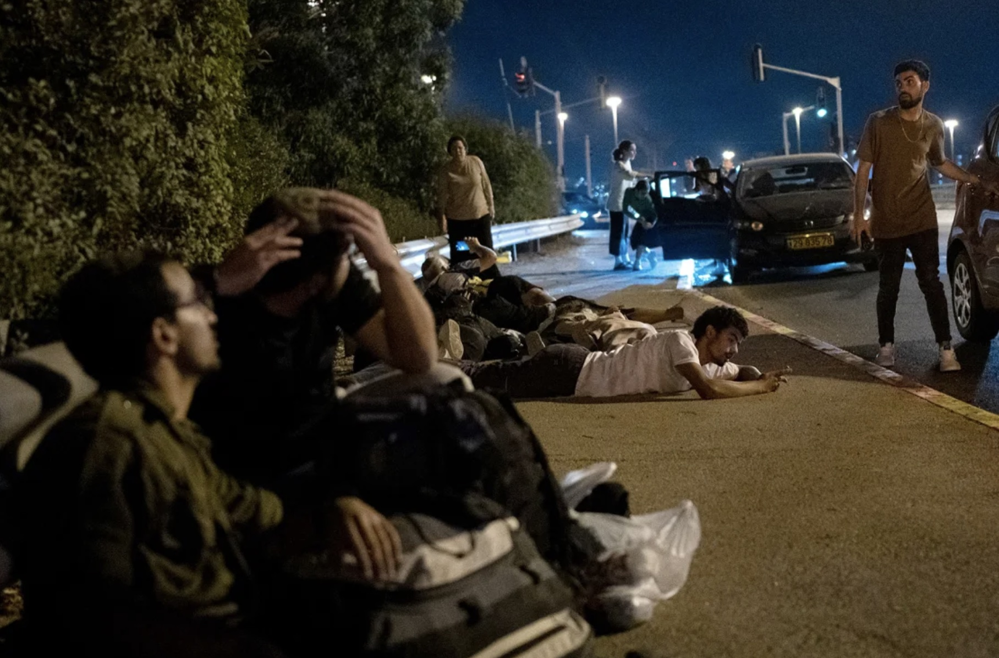 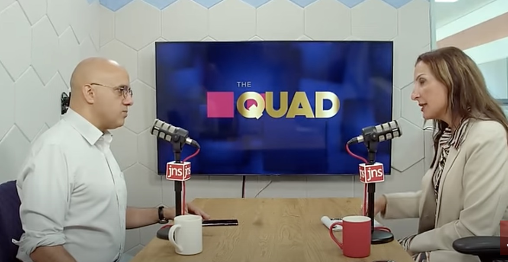 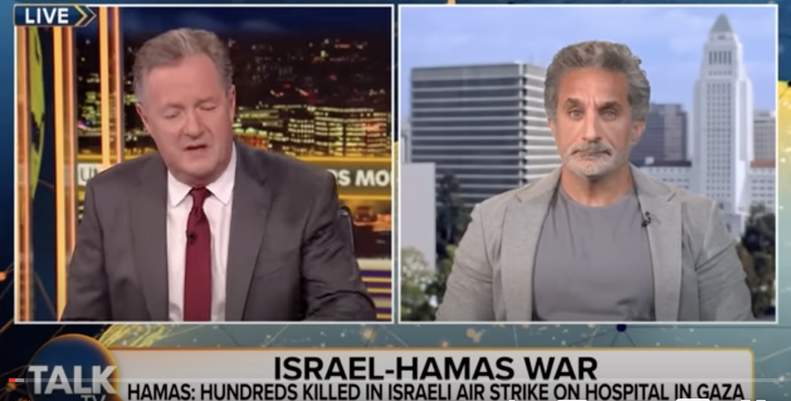 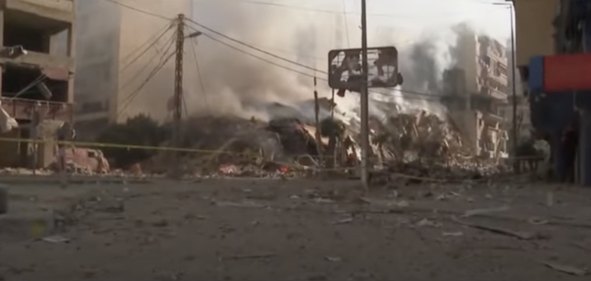 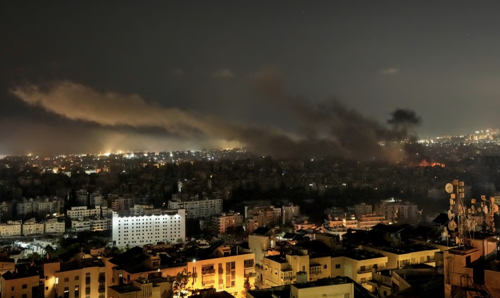Click on any thumbnail below to explore articles, podcasts, videos, and interviews about the ongoing War in The Middle East.
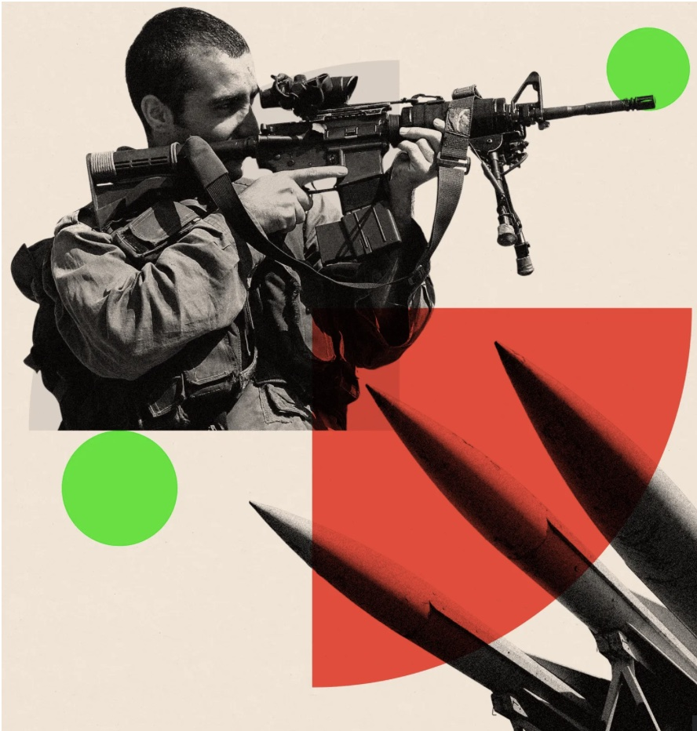 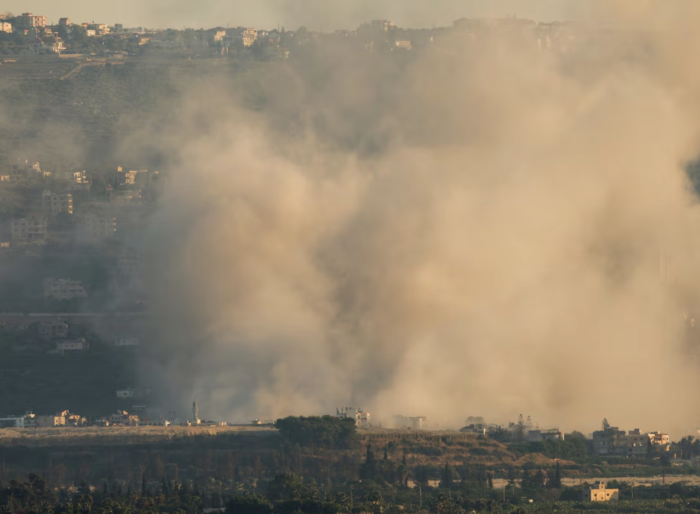 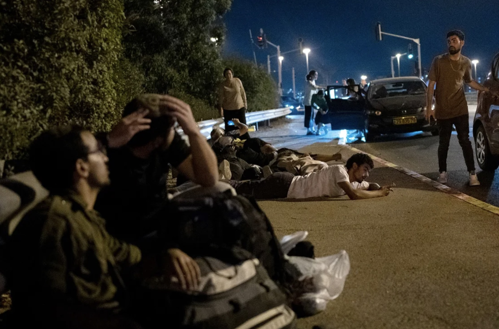 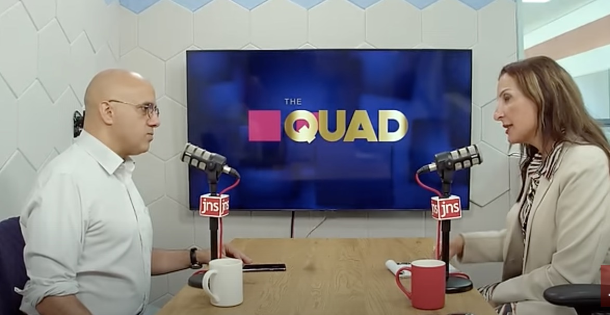 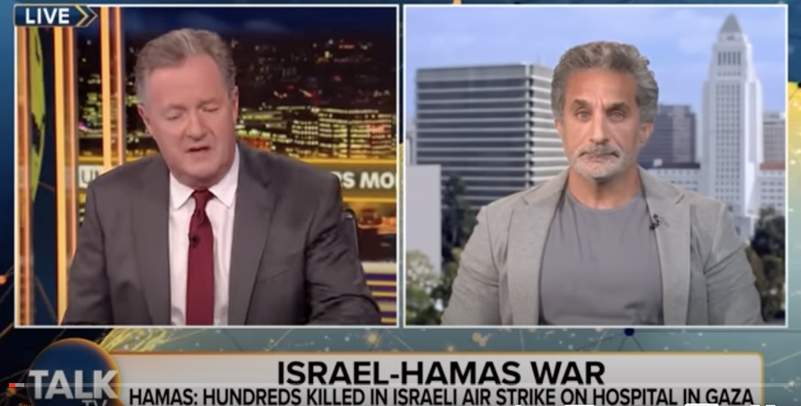 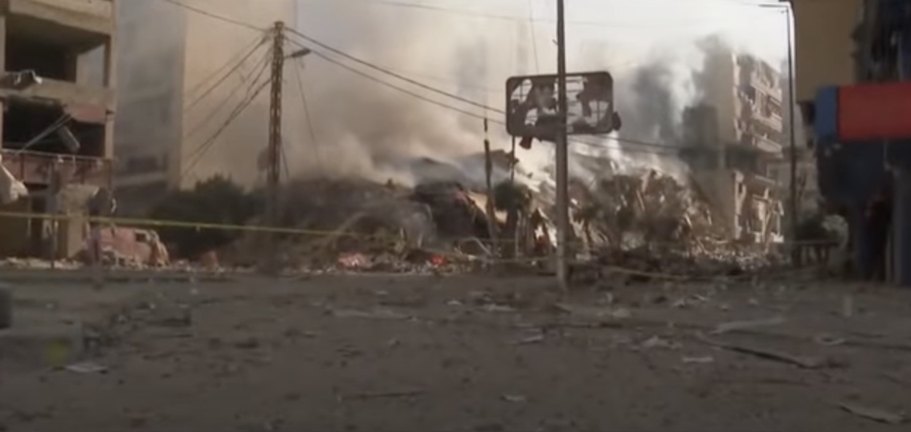 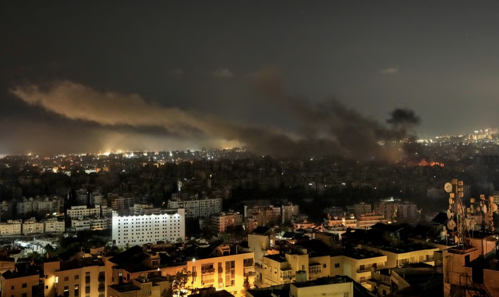